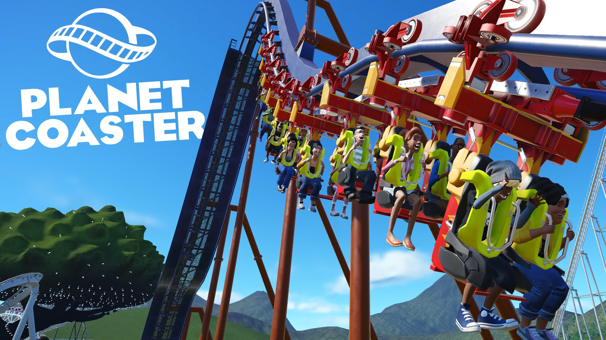

Updates/DLC:
CREATE, MANAGE, and SHARE the world's greatest coaster parks.
Be inspired and inspire others as you create, manage and share the world’s greatest parks with friends and content creators around the world. Surprise, delight and thrill your guests as you build your coaster park empire. Let your imagination run wild with the future of coaster park simulation games.
Samenvatting:
Planet Coaster doet precies wat het moet doen: de game gebruikt een oude, bekende en verslavende game als basis, en biedt die game vervolgens in een sfeervol nieuw jasje aan. Het is dan ook niet verrassend dat Planet Coaster net zo verslavend is als de oude Roller Coaster Tycoon-games. Helemaal perfect is de game niet. Bezoekers kunnen af en toe de weg in je park niet helemaal vinden, en de game heeft ook enkele grafische glitches. Die kleine problemen wegen echter niet op tegen de torenhoge fun-factor die het spel met zich meebrengt. In dat opzicht doet Planet Coaster niet onder voor die oude Roller Coaster Tycoon-games. Misschien is dat wel het grootste compliment dat het spel kan krijgen, zelfs al zouden we er in het meest ideale geval een vr-component bij hebben gehad.
